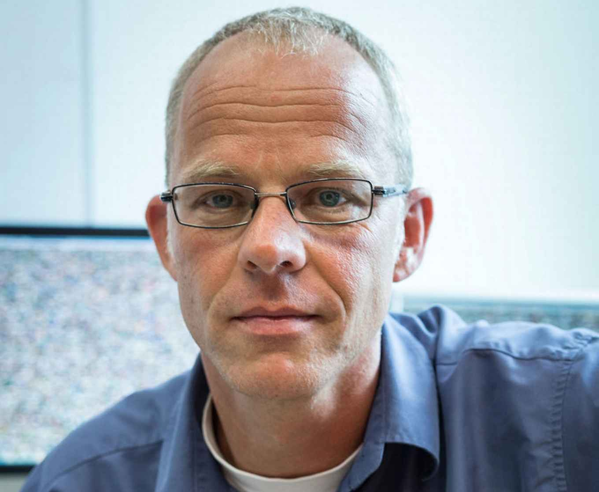

Maurice Fallon (University of Oxford)

Talk title: Combining Feed-Forward Reconstruction with Classical Visual SLAM for Scale-Consistent Reconstruction
Abstract: Feed-forward reconstruction methods (MASt3R, VGGT and siblings) are impressive in their ability to estimate 3D structure and relative motion from batches of monocular images. In this talk I will discuss what we have learned in pairing classical visual motion tracking with these methods. We have identified that FF models are imprecise compared to well-engineered visual-inertial SLAM systems but that a combined approach with minimal post-processing can achieve building-scale reconstruction in real-time. I will also present how our proposed approach can be combined with semantic segmentation to build object and room-level scene graphs. In a second part of the talk, I will discuss field robotics research into lidar place recognition, multi-session SLAM to create per-tree inventories autonomously within the context of the 8 partner EU project DIGIFOREST.
Bio: Maurice Fallon is an Professor of Robotics at University of Oxford. He leads the Dynamic Robot Systems Group which focuses on perception, mapping and navigation and focuses on dynamic robots. Originally from Ireland, Maurice's PhD (on the topic of audio source tracking) is from University of Cambridge. He was a post doc and later a research scientist at MIT from 2008 to 2015 working on marine navigation as well as perception lead for MIT’s team in the DARPA Robotics Challenge. He has been a PI on several large UK and EU collaborative projects including deploying mapping system at Chernobyl nuclear power plant and exploring underground mines.
Katy Noland (BBC)

Talk title: Broadcasting Challenges in Implementing New Video Research
Abstract: Turning a research outcome into day-to-day practice for complex broadcasting operations is hard. In this talk I will describe the challenges faced by broadcasters in implementing new video systems, using the development of ultra-high definition, high dynamic range television workflows as a case study. I will cover how we addressed mixed formats in production, format conversions, and multiple outputs, whilst minimising changes to existing workflows and maintaining creative control. I will then introduce our current research on flexible production for different display sizes, and conclude with a look to the future with a vision of a fully flexible video format that can adapt to different displays, viewing environments and individual preferences.
Bio: Katy Noland is a Lead R&D Engineer with BBC Research and Development. She has worked on fundamental research behind the Hybrid Log-Gamma (HLG) system for high dynamic range (HDR) television, and is active in developing standards and workflows for HDR. She has investigated the limits of human motion perception for high frame rate (HFR) television, and measured human perception of interlacing artefacts for interlacing filter design. She has an active interest in developing new formats that are universal and flexible whilst meeting the requirements of media production and distribution. Katy graduated from the Tonmeister course in Music and Sound Recording at the University of Surrey in 2003, and holds an MSc and PhD from Queen Mary, University of London. She has worked as a teaching fellow in media signal processing and as a visiting researcher with a consumer electronics manufacturer, before joining BBC Research and Development in 2011.
Alex Mackin (Amazon)

Talk title: Raising the Quality Bar at Prime Video
Abstract: Prime Video monitors all content for video and audio defects using computer vision, signal processing, and machine learning. This sounds like a solved problem, but standard approaches fail in surprising ways at scale. A model with 99.9% accuracy still generates thousands of false alarms per day. A silence detector flags a golf swing as a defect. A banding detector trained on modern content fails on a 1930s film. A technically measurable distortion may be imperceptible to a viewer. In this talk I will present four open challenges in perceptual defect detection: the failure of standard metrics at extreme class imbalance, the role of multi-modal context in resolving ambiguity, the brittleness of models across content diversity, and the gap between signal-level measurement and human perception. For each, I will share what we have learned from operating at production scale, and where we see opportunities for academic research to have direct impact.
Bio: Alex Mackin is a Senior Applied Scientist at Prime Video, where he leads research in live playback technology spanning content ingestion, encoding, and defect detection for live events and on-demand streaming. Previously at Prime Video, he built and launched machine learning systems for automated audio corruption detection, audio-visual synchronisation, and photosensitive content warnings. He has published over 25 papers at venues including IEEE Transactions on Multimedia, ICASSP, ECCV, and WACV, and holds multiple patents in video and audio processing. Alex chairs the Sullivan Doctoral Thesis Prize for the British Machine Vision Association and co-chairs the BMVA Symposium on Media Quality. He received his PhD from the University of Bristol in 2017.
Marcel Worring (University of Amsterdam)

Talk title: TBD
Abstract: TBD
Bio: Marcel Worring is a full professor in Multimedia Analytics at the University of Amsterdam where he leads the MultiX group. The research in MultiX focuses on developing AI techniques for getting the richest information possible from multimedia data including images, video, text, and graphs. The research explores interactions surpassing human and machine intelligence, and visualizations blending it all in effective interfaces for applications in health, forensics and law enforcement, cultural heritage, urban livability, and social media analysis.